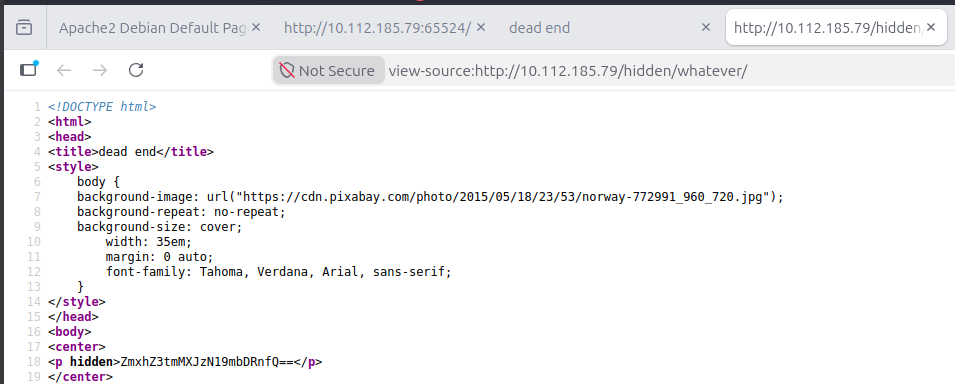
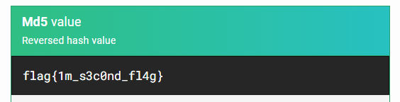
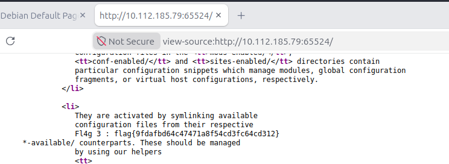
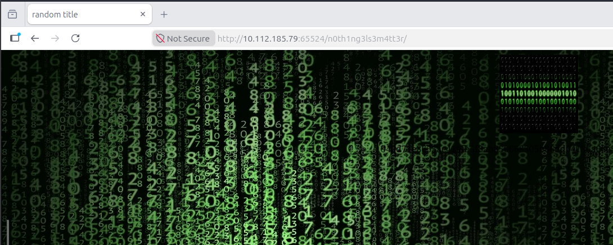
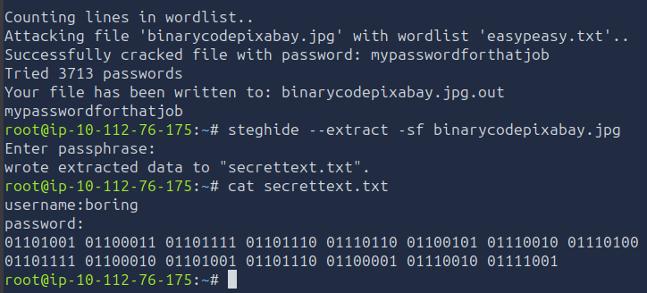
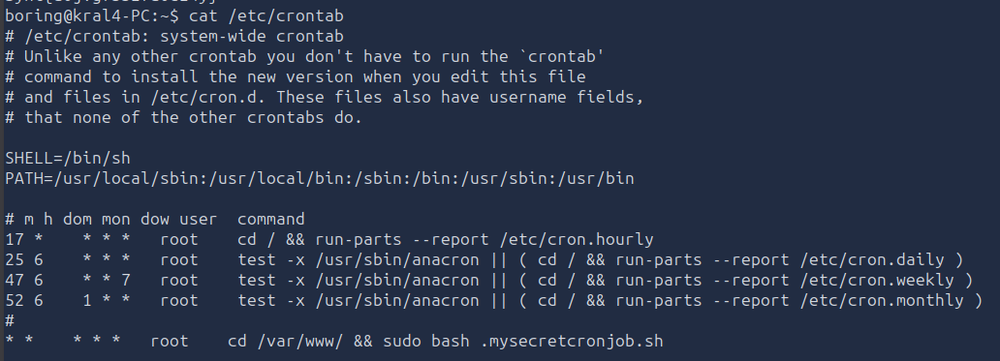

Easy Peasy TryHackMe Room Walkthrough
Executive Summary
This room focused on a complete penetration testing workflow, beginning with service enumeration, continuing through web application discovery and information gathering, credential recovery through steganography and encoding analysis, gaining initial access via SSH, and finally escalating privileges to root through an insecure cron job configuration.
The room provided practical exposure to:
- Network enumeration with Nmap
- Web content discovery using Gobuster
- Source code analysis
- Working with common encodings (Base64, Base62, binary)
- Steganography using Stegcracker and Steghide
- SSH authentication
- Linux privilege escalation through writable cron scripts
- Reverse shell techniques
Target Information
Target IP: 10.112.185.79
Phase 1 – Enumeration
Full Port Scan
The first step was to identify exposed services and determine the attack surface.
{kind=link}
Scan Results
| Port | Service | Version |
|---|---|---|
| 80 | HTTP | nginx 1.16.1 |
| 6498 | SSH | OpenSSH 7.6p1 |
| 65524 | HTTP | Apache 2.4.43 |
Key observations:
- Two separate web servers were running.
- SSH was configured on a non-standard port.
- Both web services exposed robots.txt files.
Answers Discovered
| Question | Answer |
|---|---|
| Open ports | 3 |
| Nginx version | 1.16.1 |
| Highest port service | Apache |
Phase 2 – Web Enumeration
Directory Discovery
Gobuster was used to enumerate hidden content on the web server.
{kind=link}
A hidden directory was discovered:
Further enumeration revealed:
Phase 3 – Obtaining Flag 1
Viewing the source code of:
revealed a hidden HTML element:
{kind=link}

The value appeared to be Base64 encoded.
Decoding
Output:
{kind=link}
Flag 1
Phase 4 – Robots.txt Enumeration
While investigating the Apache service on port 65524, the robots.txt file revealed unusual content.

The User-Agent value resembled an MD5 hash.
After decoding/cracking the hash, it revealed:
{kind=link}

Flag 2
Phase 5 – Source Code Analysis
Examining the source code of the Apache web page revealed another flag.
{kind=link}

Flag 3
Phase 6 – Discovering the Hidden Directory
Additional source code review uncovered a hidden message.
The hint suggested Base62 encoding.
After decoding:
{kind=link}
Hidden Directory
Phase 7 – Steganography
Browsing to the hidden directory revealed an image.
{kind=link}

The image was downloaded for offline analysis.
Password Discovery with Stegcracker
A custom wordlist supplied by the room was used.
The attack successfully recovered the passphrase.
Extracting Hidden Content
Output:
Contents:
username: boring
password:
01101001 01100011 01101111 01101110
01110110 01100101 01110010 01110100
01100101 01100100 01101101 01111001
01110000 01100001 01110011 01110011
01110111 01101111 01110010 01100100
01110100 01101111 01100010 01101001
01101110 01100001 01110010 01111001
{kind=link}

Phase 8 – Binary Decoding
The password was stored as binary data.
Decoding produced:
{kind=link}
Recovered credentials:
Phase 9 – Initial Access
SSH was available on port 6498.
After authenticating successfully, a shell was obtained.
{kind=link}
Phase 10 – User Flag
After gaining access, user enumeration revealed the user flag.
{kind=link}
{kind=link}
User Flag
Phase 11 – Privilege Escalation Enumeration
Cron jobs were investigated.
Output:
{kind=link}

This cron job executed every minute as root.
Further inspection revealed:
{kind=link}
The file was writable by the low-privileged user.
This represented a direct privilege escalation opportunity.
Phase 12 – Cron Job Exploitation
A reverse shell payload was written into the script.
A listener was started:
Within one minute the cron job executed as root and connected back.
{kind=link}
Root shell access was achieved.
Phase 13 – Root Flag
Navigating to the root directory revealed:
Output:
Root Flag
Attack Path Summary
- Enumerated services with Nmap.
- Discovered hidden directories using Gobuster.
- Extracted Flag 1 from Base64 encoded source code.
- Recovered Flag 2 from information exposed in robots.txt.
- Found Flag 3 within page source comments.
- Decoded a Base62 string to discover another hidden directory.
- Downloaded an image and performed steganographic analysis.
- Cracked the steganography passphrase using a supplied wordlist.
- Extracted credentials hidden within the image.
- Decoded a binary-encoded password.
- Authenticated via SSH.
- Enumerated cron jobs.
- Discovered a root-owned cron job executing a writable script.
- Replaced the script with a reverse shell payload.
- Obtained a root shell and captured the final flag.
Lessons Learned
Enumeration Is Critical
Several flags and clues were hidden in locations often overlooked:
- robots.txt
- HTML source code
- Hidden directories
- Alternate web servers
Multiple Encodings Are Common
The room required identification and decoding of:
- Base64
- Base62
- Binary
Recognizing encoding patterns is an important penetration testing skill.
Steganography Can Hide Credentials
Images may contain:
- Embedded files
- Hidden messages
- Credentials
Tools such as Stegcracker and Steghide can be extremely effective during investigations.
Cron Jobs Are Common Privilege Escalation Targets
Misconfigured scheduled tasks remain one of the most common Linux privilege escalation vectors.
A writable script executed by root effectively provides arbitrary code execution with elevated privileges.